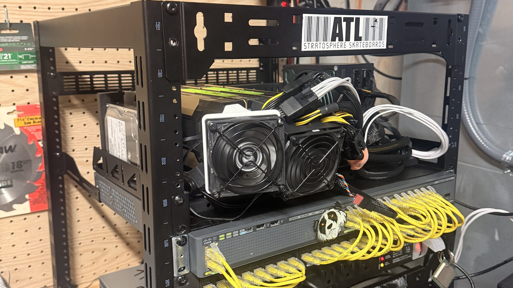

1background · relative · no stamp (the hero)
2background · absolute · ?v= stamp (the ladder)

3<img> · relative · no stamp 4<img> · absolute · ?v= stamp
4<img> · absolute · ?v= stamp5background inside a blur plate (the work cards)
6background · no grayscale filter